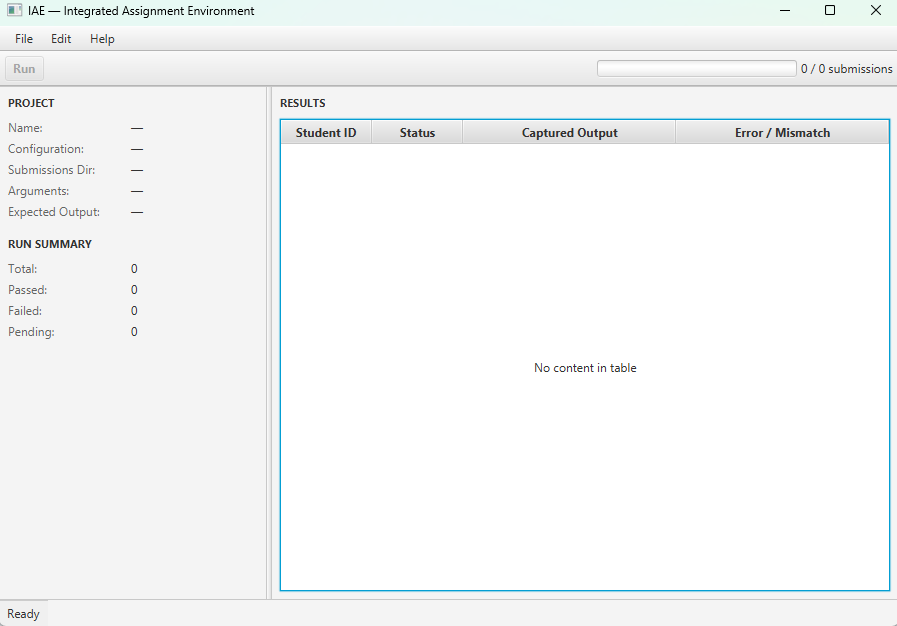
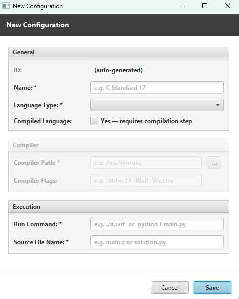
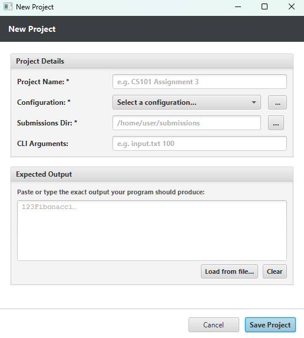
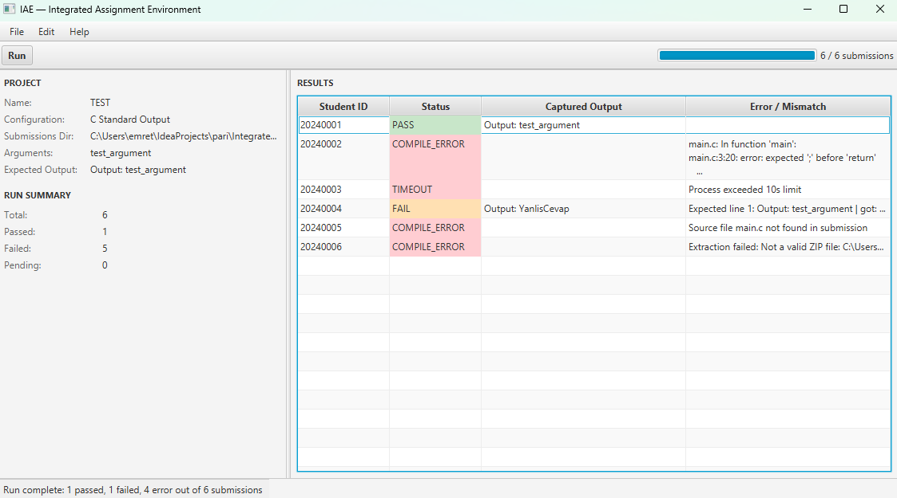

Welcome to the Integrated Assignment Environment (IAE). Developed specifically for the CE 316 Software Engineering course, IAE is a serverless, highly resilient desktop application designed to fully automate the process of evaluating programming assignments.
The Integrated Assignment Environment works in four steps: it gets the work from the students it checks the work to make sure it is correct it runs the work to see what it does and then it compares the work to the right answers. The Integrated Assignment Environment is very flexible so students can use it with different programming languages like C and Java and also Python. The computer that the Integrated Assignment Environment is on needs to have the right tools to work with those languages.
When students use the Integrated Assignment Environment their work is kept separate. So if one student has a problem, with their work like it is not working right or it is doing something the IAE will stop that problem and keep it from affecting anyone else. This means that even if something goes wrong the IAE will keep working and will not crash. It will finish all the work it needs to do.

Upon launching the IAE application, you are presented with a modern, dual-pane workspace designed for efficiency. The top Menu Bar and Toolbar provide access to project management and execution controls. The left panel serves as your Project Dashboard, summarizing the active configuration, target directories, command-line arguments, and a real-time statistical run summary.
The right panel is entirely dedicated to the Results Table, which populates dynamically as the evaluation engine runs. To utilize the software effectively, follow this logical sequence: First, define how a language operates via a Configuration. Second, bind that setup to a grading session by creating a Project. Finally, press the Run button to evaluate the student archives. Continuous system feedback is provided via the bottom status bar.
A Configuration is the core of the IAE evaluation engine; it dictates exactly how the software should handle a specific programming language. Navigate to Edit > Manage Configurations to open the dedicated editor.
Here, you define the compiler executable path (gcc), essential compiler flags (-Wall -o main), the execution command (./main), and the exact expected source file name (main.c) that the software must extract from the student ZIPs. For interpreted languages like Python, simply uncheck the "Compiled Language" toggle to bypass the build stage.
Because configurations are safely serialized as JSON files, they are highly portable. Use the Export Configuration button to share your rule-sets with colleagues, or use Import Configuration to load predefined templates and begin grading instantly.

A Project binds your language Configuration together with a specific batch of student submissions. Navigate to File > New Project to begin. Assign your project a name and select your Configuration from the dropdown menu.
Next, utilize the directory browser to locate your Submissions Directory—this folder must contain the raw student ZIP files. If the assignment requires external parameters to function, enter them into the Command-Line Arguments field. Lastly, carefully paste the exact expected console output into the text area; the system's text analysis engine will use this as the absolute truth for grading. Once saved, the project is stored locally as a project_data.json file, allowing you to close the application and seamlessly resume your session later via File > Open Project.

With a project loaded and your submissions directory verified, the Run button on the top toolbar will illuminate. Clicking it dispatches the complex evaluation pipeline to a background worker thread, ensuring the User Interface never freezes during heavy workloads.
The engine iteratively unpacks each ZIP file using native Java utilities, searches for the declared source file, compiles the code (if necessary), and executes the resulting binary. To prevent malicious or poorly written code from halting the system, the execution engine strictly enforces a 10-second timeout policy. As the programs terminate, their standard output is aggressively trimmed of trailing whitespace and compared line-by-line against your expected text. You can monitor the overall completion via the progress bar.
The Results Table is engineered for rapid diagnostic scanning. Every submission receives a strict color-coded verdict based on the engine's findings. You can click on any row to view the untruncated console logs and exact error traces in the detail pane below.
Code compiled, executed on time, and the output matched perfectly.
Code ran successfully, but the output text diverged from expectations.
ZIP corrupted, source file missing, or compiler syntax failure.
Program crashed during execution (e.g., NullPointer, memory leak).
Program trapped in an infinite loop and was forcefully terminated.
If you encounter unexpected results during a batch evaluation, consider these common pitfalls and their immediate solutions:
This typically implies the required compiler (like GCC or Java) is either not installed on the host machine or not registered in the system's PATH variables. Verify your terminal by typing gcc --version.
This is frequently caused by invisible character mismatches. Ensure your Expected Output text does not contain conflicting line endings (CRLF vs LF) or hidden trailing whitespaces that the student's code does not print.
If the engine reports that the source file is missing, the student may have named their file incorrectly (e.g., Main.c instead of main.c) inside the archive. The engine mandates exact naming conformity.

The Integrated Assignment Environment (IAE) Version 1.0.0 was architected and engineered by Team 8 for the CE 316 Software Engineering course at İzmir University of Economics (Spring 2026).
Built upon Java 21, JavaFX, and Jackson JSON persistence, the software demonstrates robust MVC architecture, defensive system programming, and zero server dependencies.